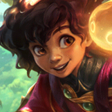

核心裝備
 熾灼魔器
熾灼魔器米里歐頻繁的護盾與治療很容易觸發，搭配射手或普攻核心時團隊收益極高。
 和諧回音
和諧回音ARAM 團戰密度高，能把每次施放技能轉化成更穩定的群體續航。
 贖罪神石
贖罪神石提供額外範圍治療與團戰救援能力，特別適合單線拉扯。
 流水之杖
流水之杖己方法系或技能型核心越多，護盾與治療後的團隊增益越明顯。
 米凱的祝福
米凱的祝福面對連續控制時提供第二層解控保險，避免只靠大絕承擔所有壓力。

Milio · 護盾續航／群體解控型輔助
米里歐的任務不是自己打傷害，而是把己方最強的輸出點保到最後。先用 3 技與 2 技維持隊伍狀態，敵方真正交出關鍵控制後再用大絕解控，價值最高。
本站評級理由：米里歐在 ARAM 能持續替多人提供護盾、治療與攻擊距離，狹窄單線也讓他的擊退與群體解控更容易覆蓋關鍵隊友；自身輸出有限，但只要隊上有穩定核心，他的團戰增幅非常高。
標準 ARAM 先以通用基準呈現；本站未把 AAA ARAM 額外規則混入標準 ARAM 數值。
米里歐頻繁的護盾與治療很容易觸發，搭配射手或普攻核心時團隊收益極高。
ARAM 團戰密度高，能把每次施放技能轉化成更穩定的群體續航。
提供額外範圍治療與團戰救援能力，特別適合單線拉扯。
己方法系或技能型核心越多，護盾與治療後的團隊增益越明顯。
面對連續控制時提供第二層解控保險，避免只靠大絕承擔所有壓力。

前期優先技能加速，讓護盾、治療與擊退更快循環。

升級三級鞋後進一步強化技能循環與法系功能，維持長團戰支援。

護盾與消耗都能穩定觸發，是米里歐最全面的核心符文。

1 技緩速或擊退命中後能替隊伍再補續航。

避免自己被突進角色第一波直接帶走。

直接放大米里歐的護盾與治療，是 ARAM 長團戰的核心收益。
更多技能加速代表更高的護盾、治療與解圍頻率。

保命、拉開距離或閃現進範圍替隊友解控都很重要。

刺客或戰士衝進後排時能立即降低其爆發，替核心爭取輸出時間。
3 技 > 2 技 > 1 技
ARAM 開局三個基礎技能各點 1 級，之後主升 3 技、次升 2 技；大絕能點就點。
先站在後排用 3 技替被集火的隊友擋傷，2 技優先給最能持續輸出的核心。1 技主要留來斷突進，不必為了消耗一直往前走。
有兩件功能裝後，米里歐會明顯提高整隊容錯。大絕不要只看到第一個小控制就交，優先等敵方真正能決定團戰的群控或連鎖控制。
後期幾乎全程圍繞己方主力站位。保持自己不先死，讓 2 技射程、3 技雙充能與大絕解控持續覆蓋核心，就是最高價值。
需要替全隊多一層瞬間護盾時，可替換流水之杖。
 蘇瑞亞的戰歌
蘇瑞亞的戰歌額外移速能幫整隊進退場與調整站位。
米凱的祝福若核心常被第一手控制抓到，可以比預設更早製作。
看遊戲卡片下方分類 → 點相同分類 → 看左側 S+／S／A。
二、三技能與大絕都能提供治療或護盾，復原類增幅觸發非常穩定。
系列完全圍繞治療護盾設計，和米里歐的保排技能組高度契合。
三技能雙充能能反覆上盾，護盾免控與獲盾觸發效果很容易利用。
更高技能循環代表更多護盾、射程增益與大絕解控機會。
跑速能幫助自己與核心保持安全站位，強化整隊拉扯。
一技能有擊退能力，但控制不是主要輸出軸，控制類要看單卡效果。
7.2b ARAM S 第四批：米里歐依 7.2b 現行技能／裝備資料與 ARAM 單線團戰環境整理；標準 ARAM 與 AAA ARAM 分開處理。
ARAM 使用獨立於召喚峽谷的資料集；本站會把官方模式平衡、單線 5v5 特性與出裝／符文適配分開判斷，而不是直接複製峽谷配置。